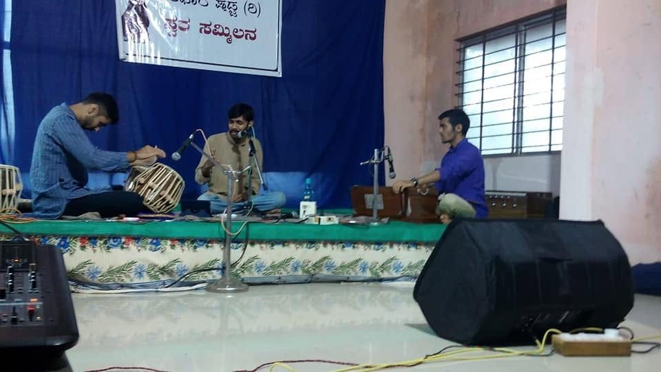
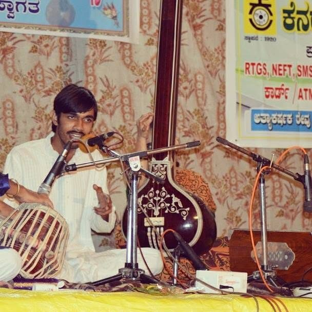
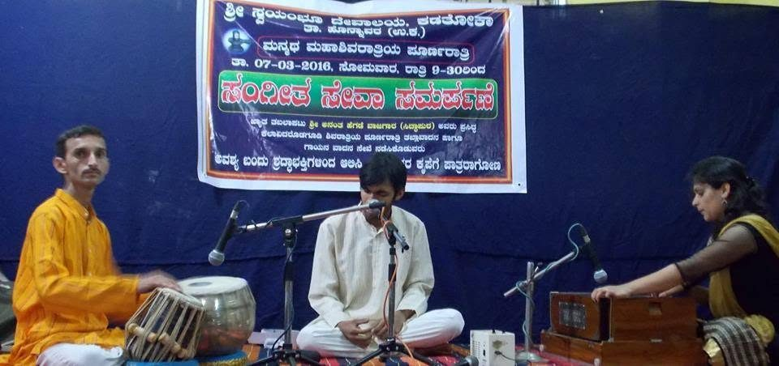

Hubballi, Karnataka
I'm a Chartered Accountant and Partner at Shriganesh & Subrahmanya Chartered Accountants in Hubballi. Beyond the practice, I mentor entrepreneurs, explore how AI is changing accounting, write in English and Kannada, and study Vedic astrology and Vedanta. Music has been with me throughout: over 12 years of Hindustani classical training under Pt. Vinayaka Hegde Hirehadda.
This site brings those threads together: what I do, what I'm learning, and what I think along the way.
Read my storyPractical taxation, GST, audit and finance.
Explore →Building businesses beyond professional practice.
Explore →AI, automation and the future of accounting.
Explore →Discipline, leadership, productivity, books and ideas.
Explore →Music, Vedic astrology, Vedanta, travel and reflections.
Explore →I trained in Hindustani classical vocal music for over 12 years under my guru, Pt. Vinayaka Hegde Hirehadda, and completed the Senior examination in Hindustani music. I was also awarded a Government of Karnataka scholarship for Hindustani music.
I've performed in concerts across Uttara Kannada and Bangalore, and travelled widely with my guru for his programmes.
In 2012 I started Adhara Shadja, a WhatsApp broadcast that shared one Hindustani classical recording every day. It grew to more than 3,000 music lovers.
An evening raag of the Marwa thaat. Komal Re and tivra Ma give it its colour.
Starts at 2:30 · Also on SoundCloud



For professional enquiries, speaking or mentoring, or just to say hello.